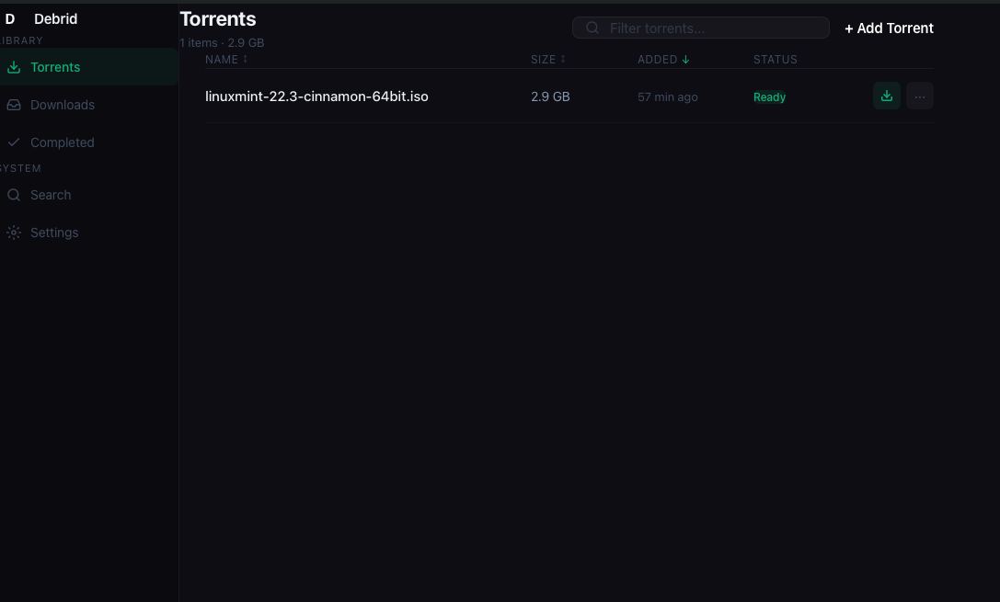

Native desktop app with multi-threaded downloads, keyboard-first controls, and secure token storage. Now with TorBox support.

Nothing you don't.
Add magnets or .torrent files, select specific files, and monitor progress in real time.
Add your own sources and search across all of them in parallel.
Multi-threaded downloads with real-time speed, ETA, and progress.
⌘K search, ⌘R refresh, arrow nav, Enter to download. Full control.
API tokens in OS keychain. macOS builds signed and notarized.
Dark and light mode with 6 accent colors. System tray support.
Grab the installer for your platform. No dependencies needed.
Choose Real-Debrid or TorBox. Paste your API token or log in with OAuth. Stored securely in your OS keychain.
Add torrents, search trackers, and download at full speed.
Native builds for every major platform
Free, open source, and built to last.
Download DebridDownloader